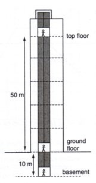
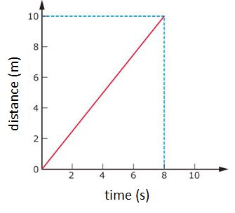
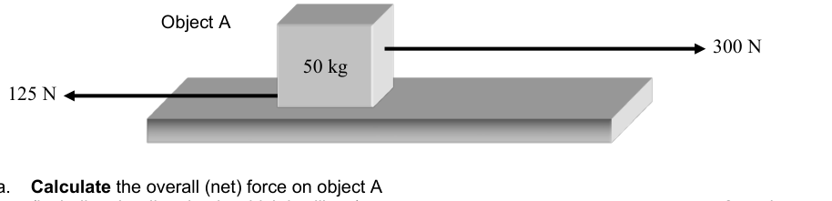
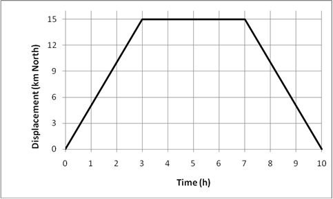
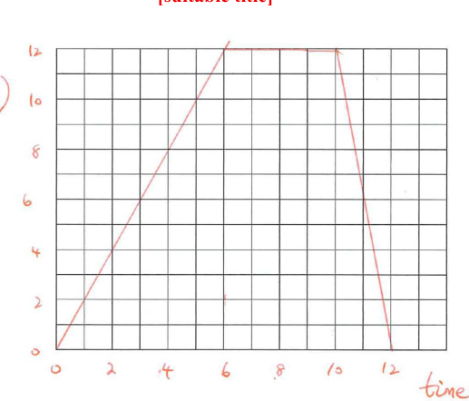

Section A: Multiple choice (10 marks)
Questions 1 and 2 refer to the following diagram.
A lift in a city building carries a passenger from the ground floor down to the basement, then up to the top floor.

The distance travelled by the lift is
10 m down to the basement, then 10 + 50 = 60 m up to the top floor: 10 + 60 = 70 m.
The displacement of the lift at the end of the journey is
It finishes at the top floor, 50 m above where it started.
A bicycle was stationary at the traffic lights. When it passed an observer 9.0 s later, it was travelling at a speed of 5.0 km/h. The average acceleration of the bicycle was
5.0 km/h ÷ 3.6 = 1.39 m/s, and a = 1.39 ÷ 9.0 = 0.15 m/s2.
The speed 5.0 m/s is the same as
5.0 × 3.6 = 18 km/h.
Consider the sample of ticker tape shown above. The ticker tape sample shows
Which of the following situations is best explained by inertia (Newton's first law)?
A box has a mass of 600 kg. What net force is required to make it accelerate at 3 m/s2?
F = ma = 600 × 3 = 1800 N.

Consider the distance–time graph above, which shows data for a vehicle travelling at a constant speed. The speed of the vehicle is
speed = gradient = 10 ÷ 8 = 1.25 m/s.
The weight of a 60 kg parcel carried by Australia Post (on Earth) is closest to
W = mg = 60 × 9.8 = 588 N.
Which of the following statements about Newton's third law of motion is false?
Section B: Short answer (27 marks)
Question 1 (5 marks)
Calculate the average speed (in m/s) of an athlete who runs 882 metres in 4.2 minutes.
4.2 min × 60 = 252 s. Speed = d ÷ t = 882 ÷ 252 = 3.5 m/s.
Calculate the distance travelled (in km) by a dog walker who walks at a speed of 1.0 m/s for 45 minutes.
45 min × 60 = 2700 s (1 mark). d = speed × t = 1.0 × 2700 = 2700 m (1 mark). 2700 m ÷ 1000 = 2.7 km (1 mark).
OR: 1.0 m/s = 3.6 km/h, 45 min = 0.75 h, and d = 3.6 × 0.75 = 2.7 km.
Question 2 (2 marks)
Describe the effect of each of the following changes (made separately) on the acceleration of an object.
- The force acting on the object is tripled, while the mass remains unchanged: the acceleration is .
- The mass of the object is halved, while a constant force is applied: the acceleration is .
a = F / m, so acceleration is proportional to the force and inversely proportional to the mass.
Question 3 (2 marks)
Consider the statement: "An object has zero acceleration. The object must therefore be at rest." State whether this statement is correct or not, and explain why.
This is not correct. According to Newton's first law, an object with zero acceleration is travelling at a constant velocity (1 mark). That velocity could be zero or non-zero (1 mark).
Question 4 (3 marks)
The diagram below shows the forces acting on a 50 kg object.

Calculate the overall (net) force on object A, including the direction in which it acts.
Fnet = N to the
Fnet = +300 + (−125) = 175 N, to the right.
Determine the acceleration of object A.
a = Fnet ÷ m = 175 ÷ 50 = 3.5 m/s2.
Question 5 (2 marks)
Gravity on the Moon is less than on Earth, with gmoon = 1.6 m/s2. An object experiences a force due to gravity of 128 N on the Moon. Calculate the force on the object due to gravity if it were moved to the surface of the Earth.
m = Fg ÷ gmoon = 128 ÷ 1.6 = 80 kg (1 mark). Fg, Earth = mg = 80 × 9.8 = 784 N (1 mark). (7.8 × 102 N is also accepted.)
OR: the ratio 9.8 ÷ 1.6 = 6.125, so F = 6.125 × 128 N = 784 N.
Question 6 (4 marks)
Consider the displacement–time graph below for a journey along a walking track.

State the displacement of the journey.
The walker finishes where they started.
Calculate the total distance for the journey.
15 km + 15 km = 30 km.
Calculate the average speed for the journey.
30 km ÷ 10 h = 3.0 km/h.
State how long the walker stopped during the journey.
The graph is flat from 3 h to 7 h.
Question 7 (5 marks)
A car starts from rest. The table below shows the car's speed every two seconds after it starts.
| Time (s) | 0 | 2 | 4 | 6 | 8 | 10 | 12 |
|---|---|---|---|---|---|---|---|
| Speed (m/s) | 0 | 4 | 8 | 12 | 12 | 12 | 0 |
Draw a graph on paper to represent these data. Make sure the axes are fully labelled, and include a title. Then compare it with the model graph.
A speed–time graph with a suitable title, time (s) on the horizontal axis and speed (m/s) on the vertical axis. The line rises steadily from 0 to 12 m/s over the first 6 s, stays at 12 m/s until 10 s, then drops to 0 at 12 s.

Calculate the acceleration during the first 6 seconds.
a = (v − u) ÷ t = (12 − 0) ÷ 6 = 2 m/s2.
State the
(i) speed between 6 and 10 seconds: m/s
(ii) magnitude of the acceleration between 6 and 10 seconds: m/s2
Question 8 (4 marks)
A baseball falling vertically to the ground after a hit has reached terminal velocity (it is now travelling at a constant velocity downwards, towards Earth). The force due to gravity acting on it at this moment is 2 N.
State the magnitude and direction of the air resistance acting on it: N
At terminal velocity the forces are balanced, so air resistance equals the weight but acts in the opposite direction.
Describe a force diagram showing the forces acting on this ball. The arrows should show both the relative size and direction of each force, and each force must be labelled.
- Two opposing forces: weight (force due to gravity) pointing down and air resistance pointing up (1 mark).
- Correct labels (1 mark).
- The two arrows are the same size (1 mark).